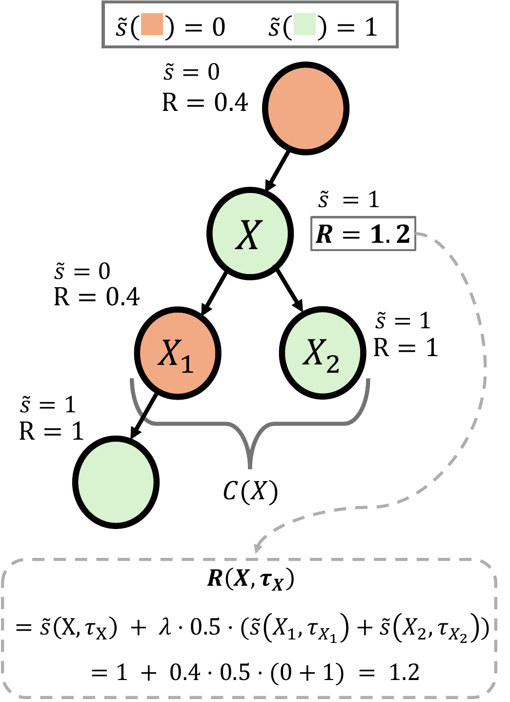
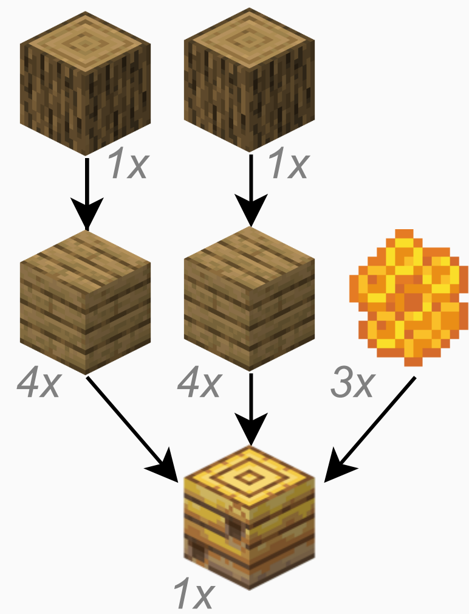
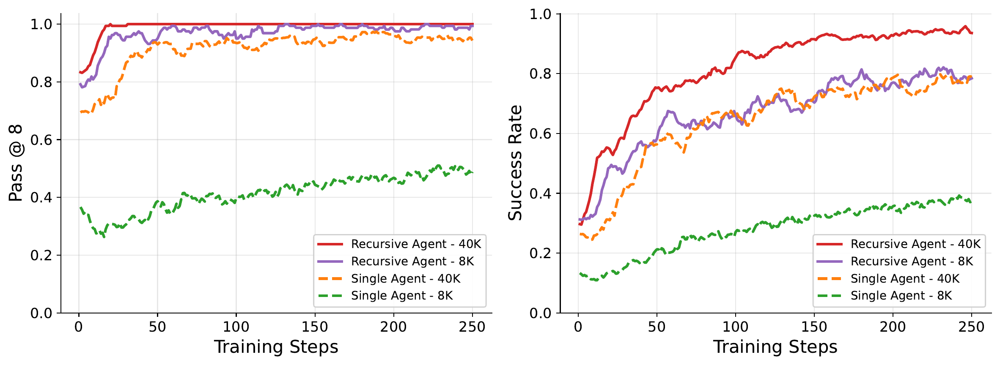
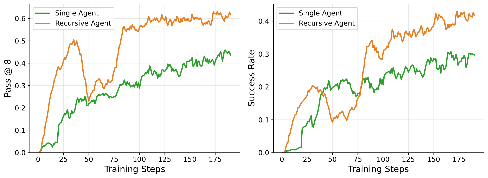
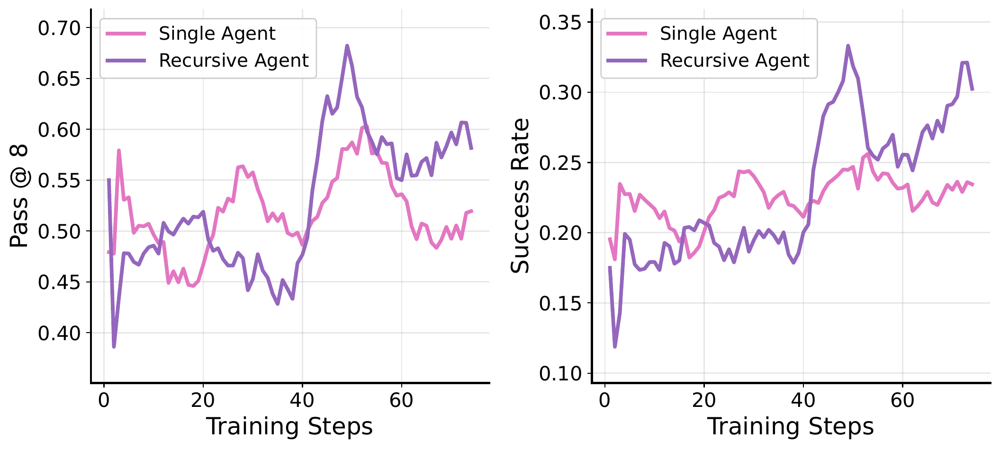
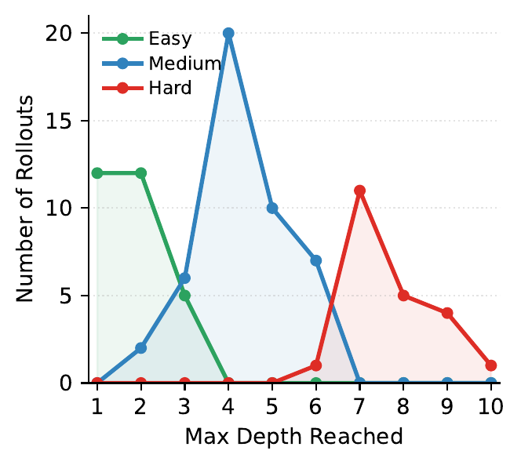
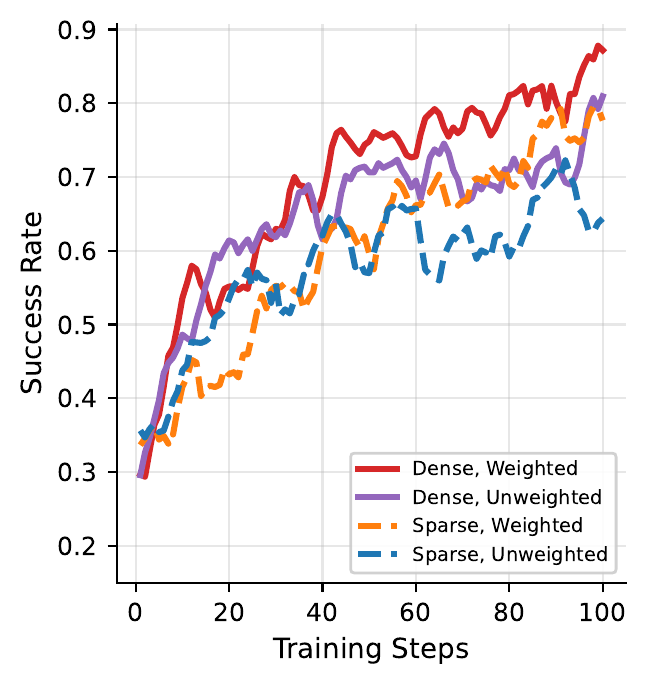

Training LLM agents to use recursion as a learned inference-time primitive.
How do we train a model to best take advantage of sub-agents at inference time? RAO is an end-to-end reinforcement learning approach for training a single LLM to spawn, delegate to, and coordinate with recursive copies of itself — turning recursive inference into a learned capability.
Each sub-agent receives a fresh context window, expanding total usable working memory beyond the model's native limit.
Hard problems can be broken into easier sub-problems, with each sub-agent specializing on a piece of the task.
Independent sub-tasks can run concurrently, reducing wall-clock latency for many real-world tasks.
We introduce Recursive Agent Optimization (RAO), a reinforcement learning approach for training recursive agents: agents that can spawn and delegate sub-tasks to new instantiations of themselves recursively. Recursive agents implement an inference-time scaling algorithm that naturally allows agents to scale to longer contexts and generalize to more difficult problems via divide-and-conquer. RAO provides a method to train models to best take advantage of such recursive inference, teaching agents when and how to delegate and communicate. We find that recursive agents trained in this way enjoy better training efficiency, can scale to tasks that go beyond the model's context window, generalize to tasks much harder than the ones the agent was trained on, and can enjoy reduced wall-clock time compared to single-agent systems.
A recursive agent is implemented as an extension of an agent that interleaves natural-language reasoning with code execution in a Python REPL. We extend the action space with an asynchronous primitive:
async launch_subagent(goal, ...) -> Any
which launches a new instance of the same policy on a delegated sub-task. Because the return type is unrestricted, parents can request structured outputs in whatever format is most useful. Sub-agents can be launched sequentially (when later steps depend on earlier results) or concurrently via standard asyncio when sub-tasks are independent.
Each node in the execution tree receives a local reward based on its own task signal, plus an optional delegation bonus tied to the success rate of its immediate children:
The first term rewards solving the assigned task; the second rewards delegating to children that successfully solve their sub-tasks. Using success rate rather than raw counts avoids rewarding the agent for spawning more children purely for bonus. Setting $\lambda=0$ recovers a purely local-success-based reward.

Recursive execution induces a family of related task distributions across depths. Let $\mathcal{D}_0$ denote the root task distribution and $\mathcal{D}_d(\theta)$ the distribution of depth-$d$ sub-tasks generated by recursively applying the current policy. RAO optimizes a single shared policy across all of them:
This can be viewed as a multi-task objective where deeper nodes tend to be easier, structured sub-problems of their parents. In effect, the agent generates its own natural curriculum during training.
Advantages are computed using a leave-one-out baseline over root-rollout rewards, applied to all trajectories within a rollout tree: $A(\tau^{(g)}) = R(\tau^{(g)}) - b_{-g},\;\; b_{-g} = \tfrac{1}{G-1} \sum_{g' \neq g} R^{(g')}_{\mathrm{root}}$. To prevent deeper levels (which can vastly outnumber root trajectories) from dominating updates, we apply depth-level inverse-frequency weighting, downweighting trajectories from over-represented depths while preserving the overall update scale.
We evaluate RAO on three benchmarks: TextCraft-Synth (a controllable Minecraft-style crafting benchmark we introduce), Oolong-Real (long-context QA over very long Dungeons & Dragons transcripts), and DeepDive (deep research). Across all three, recursive agents trained with RAO beat RL-trained single-agent baselines.
TextCraft-Synth is a synthetic benchmark we introduce, inspired by TextCraft. The agent is given an initial inventory and must craft a target item using procedurally generated recipes. Crafting is naturally compositional and recursive: an item required for the target may itself need to be crafted from sub-components. Tasks come at three difficulty levels by depth of the underlying crafting tree (Easy 2–3, Medium 4–6, Hard 7–9). All training uses only medium-difficulty tasks; we evaluate generalization to easy and hard at test time.


Success rate (SR) across evaluation difficulties. Steps and wall-clock time are computed over the intersection of tasks solved by both methods at each difficulty. Bold indicates the best in each row.
| Difficulty | Method | SR | Steps | Time (s) |
|---|---|---|---|---|
| All | Single | 0.24 | 16 | 7.1 |
| Recursive | 0.95 | 33 | 9.9 | |
| Easy | Single | 0.55 | 12 | 5.2 |
| Recursive | 1.00 | 23 | 8.0 | |
| Medium | Single | 0.17 | 25 | 11.1 |
| Recursive | 0.96 | 52 | 13.6 | |
| Hard | Single | 0.00 | — | — |
| Recursive | 0.88 | — | — |
| Difficulty | Method | SR | Steps | Time (s) |
|---|---|---|---|---|
| All | Single | 0.73 | 54 | 35.7 |
| Recursive | 0.96 | 115 | 19.8 | |
| Easy | Single | 0.97 | 11 | 6.6 |
| Recursive | 1.00 | 21 | 8.8 | |
| Medium | Single | 0.87 | 60 | 38.1 |
| Recursive | 0.98 | 109 | 20.9 | |
| Hard | Single | 0.20 | 252 | 180.0 |
| Recursive | 0.88 | 694 | 73.3 |
Oolong-Real requires aggregating information from very long Dungeons & Dragons transcripts. Training is constrained to 32K tokens (a Tinker training-API limit), but instances require processing at least ~55K tokens. A single agent cannot fit the full input and must rely on heuristics like regex or selective printing. A recursive agent can chunk the input across sub-agents, each with a fresh 32K context.

Average reward across context-length buckets (650-sample evaluation, bucketed 55K–175K). Steps and time on the common non-zero-score intersection.
| Method | Avg. | 55K | 118K | 175K | Steps | Time (s) |
|---|---|---|---|---|---|---|
| Single | 0.203 | 0.351 | 0.183 | 0.129 | 7.1 | 12.6 |
| Recursive | 0.320 | 0.454 | 0.315 | 0.249 | 61.5 | 175.4 |
Notably, our 30B recursive model approaches the Oolong performance of much larger frontier models — Claude-Sonnet-4 (0.37), o3 (0.37), and GPT-5-mini (0.35).
DeepDive contains challenging QA pairs constructed by performing controlled walks over knowledge graphs, requiring multi-hop, iterative web searches and synthesis over information scattered across the web. Sub-tasks here are sequentially dependent rather than parallelizable: only 1.6% of delegations were concurrent (vs. 83.9% on TextCraft-Synth).

| Method | SR | Steps | Time (s) |
|---|---|---|---|
| Single | 0.24 | 5.2 | 13.3 |
| Recursive | 0.40 | 121.2 | 233.0 |
On tasks solved by both methods the average max depth was 2.9; on tasks uniquely solved by the recursive agent it was 4 — the agent learns to allocate more test-time compute to harder questions.

RAO teaches the agent when and how much to delegate. On TextCraft-Synth, the depth distribution of successful rollouts tracks task difficulty closely. On Oolong-Real, almost all successful rollouts use depth 1 — intuitive, since long-context aggregation is best handled by chunking once. On DeepDive, harder tasks elicit deeper delegation. Across all three, the agent learns task-appropriate delegation rather than applying recursion uniformly.

We ablate the two key design choices in RAO. Dense rewards (using both root and sub-agent task-specific rewards) substantially outperform sparse propagation of root rewards alone. Independently, depth-level inverse-frequency weighting improves over the unweighted variant by preventing deeper, more populated levels of the tree from dominating the gradient.
Recursive agents solve tasks whose inputs exceed the model's training context — by chunking and delegating to sub-agents.
Dense, structured sub-agent rewards plus a self-induced curriculum yield faster and stronger learning even when context is unconstrained.
Trained on medium difficulty, recursive agents reach 88% SR on hard tasks — vs. 20% for the single-agent baseline.
Recursion depth scales with task difficulty: easy problems stay shallow, hard problems unlock deeper trees.
Up to 2.5× wall-clock speedup on hard TextCraft tasks via concurrent asyncio sub-agent launches.
Inference-time scaffolds shouldn't just be designed around models — models should be trained to use them.
@article{gandhi2026rao,
title = {Recursive Agent Optimization},
author = {Gandhi, Apurva and Chakraborty, Satyaki and Wang, Xiangjun
and Kumar, Aviral and Neubig, Graham},
journal = {arXiv preprint arXiv:2605.06639},
year = {2026}
}